Alright, here we go .... Plastics removed, ready to get torn to pieces. I have no idea if there is a certain way to do this so I'll just start from the "outside" and work my way in. I plan on taking this down as far as I dare so 1st thing is to remove the instrument cluster and the wire harness, starting with identifying and labeling every wire in the system.


Got the wire harness out, it doesn't look too bad in this picture but some wires have been repaired with a newer wire with a DIFFERENT COLOR... WHY ?!?!?! and instead of a proper solder joint and a shrink-tube someone thought it was better to use WIRENUTS 😖 to me that's like nails on a Blackboard. I am not sure what to do with this - at the moment of writing I am considering junking the existing harness and re-wire the whole bike, that way I can also make some sort of controller for the bikes electrical system, route the wires inside the frame for a cleaner look and use some more modern components.
In the smaller picture the ignition timing pickup has also been "repaired" before, notice the wires are twisted together and one of the wires have also been electrically "isolated" with tape. This is sitting in a hot and oil filled space so I am surprised the tape hasn't fallen off, do I need to worry what the missing piece of tape is clogging up ?
I am missing picures of the progress, but I got everything taken off the bike, layed it on its side and managed to hoist the engine out to get it situated in a 'cradle'.
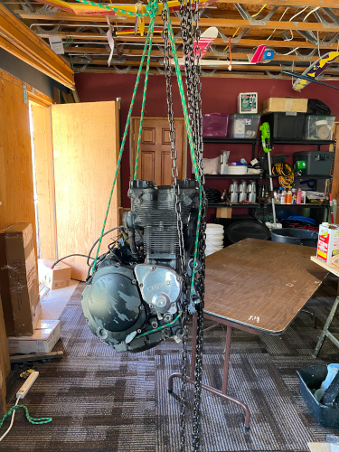 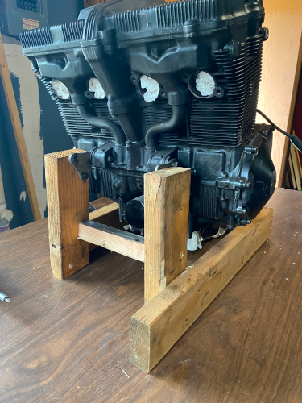
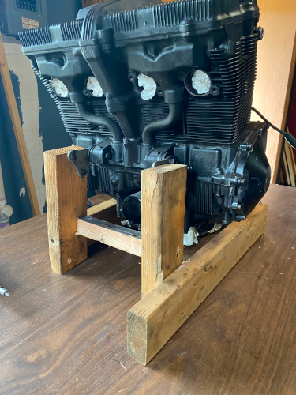
I was worried about what I would find under the cover but was relieved when I saw nothing broken, bend, burned or even unusual discolored. I'll likely find worn parts as I dig deeper and start measuring - so far so good....


Here was the first one, and I expect to find many more of these 🤬 rusted-in-place bolts. This one was holding a rubber boot to one of the intake ports. The bolt was rusted in place to where I eventually destroyed the head trying to get it out, luckily it wasn't fused to the engine so after being pursuasive with rust-dissolver and a Mr. Tungsten-bolt-remover-3000, it gave up the fight.
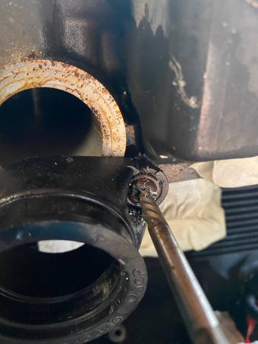Alternator is out.
> 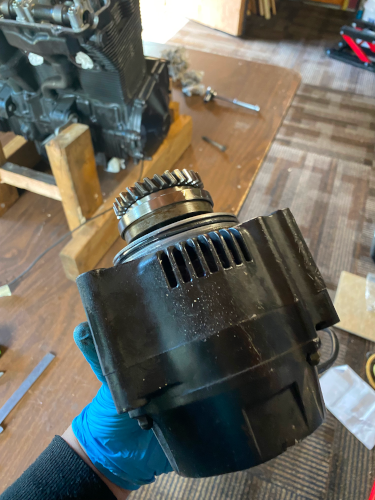
Next I took off the clutch cover ... yikes! how does water get in here? Luckily it's only surface rust, I doubt this will affect the health or performance of the engine as the outer surface doesn't mate to anything. I removed the whole clutch assembly to make it easier to work on the rust - I got the 'grooves' on the inside smoothed out and I was able to get it to look decent on the outside. Changing the internal lubricant from water to oil will likely prevent this from happening again.
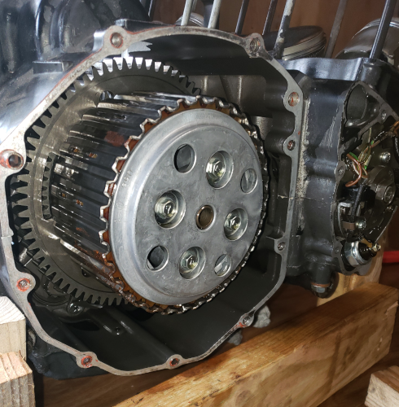 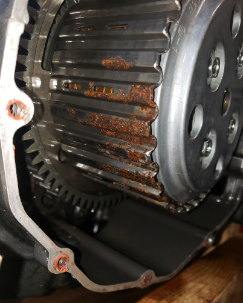 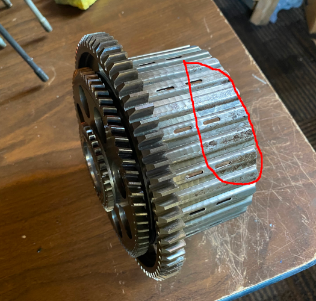Head came off, I don't see any burnt valves or pistons, only some carbon build-up.


Off came the cylinder block, and it showed some damage on the inside cylinder walls, not sure yet what caused it, but water damage seems to be a common culprit around here. I can definitely feel it when running my fingers over the area - hopefully a honing can fix it, I'll let a mechanic take a look and give an assessment.
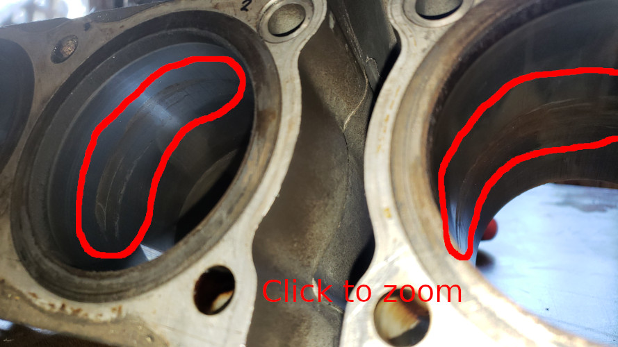Engine is close to being completely disassembled, here it's ready for piston removal, and I found more taped up wires... 🙄
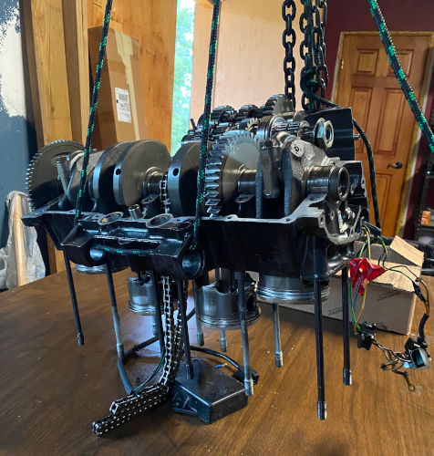The engine is now disassembled, parts are bagged and labeled, ready to be cleaned/painted/repaired/replaced.
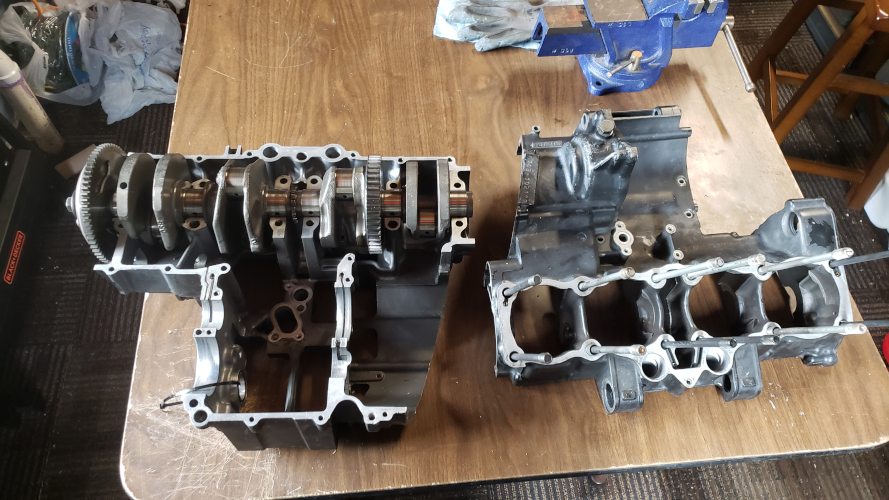 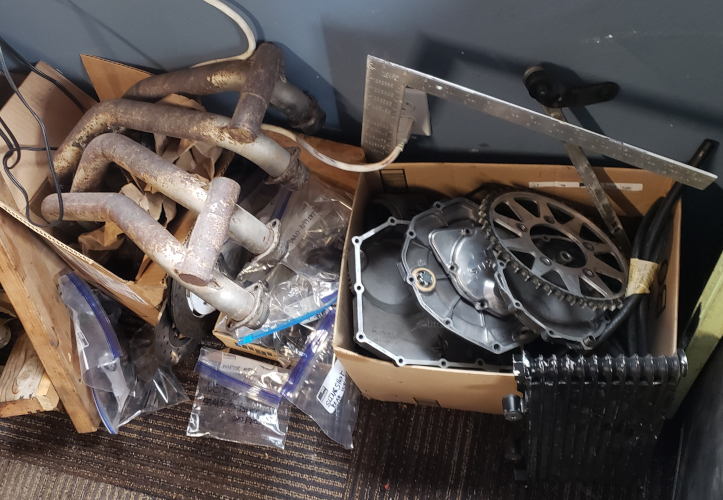